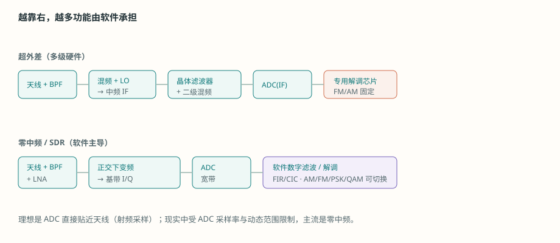
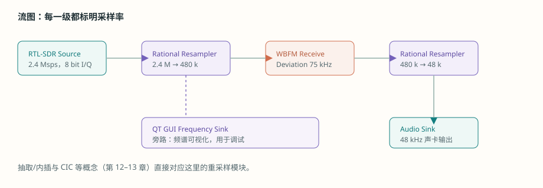
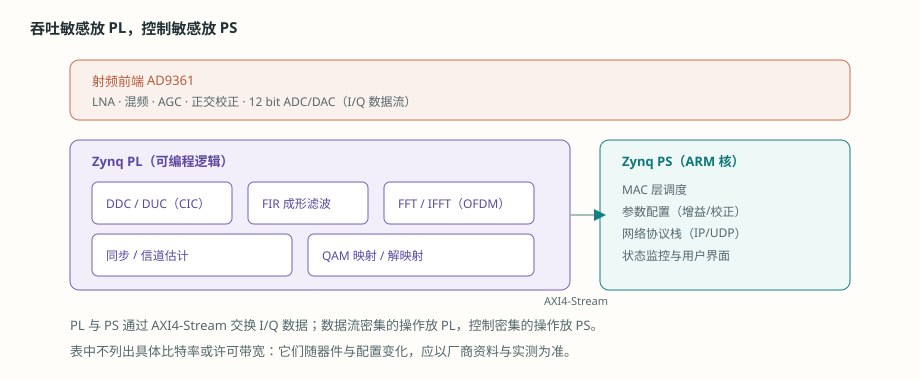

Applications · SDR / 27
软件无线电：用软件定义射频链路
传统无线电的每个频段、每种调制都由固定电路决定；SDR 把尽可能多的处理搬到软件里——ADC 尽量靠近天线，之后的滤波、解调、编解码都由代码完成。
用软件定义无线电
传统无线电设备完全由硬件定义：每一个频段、每一种调制、每一种滤波特性都由电路板上固定的混频器、本振与滤波器决定。换一种制式，就要重新设计一块 PCB。
软件无线电（SDR）提出的是另一种思路：把信号链路尽可能数字化，让 ADC 尽量靠近天线，之后的滤波、调制/解调、编解码都在通用处理器或 FPGA 上用代码完成。这样改变功能只需更新软件，而不是更换硬件。
SDR 可以说是前面各章知识的综合练兵场：采样定理（第 4 章）、数字下变频（第 24 章）、CIC 与多速率（第 12–13 章）、FFT（第 8 章）、同步与信道估计（第 24 章）都在其中反复出现。
核心理念与架构
SDR 的核心可以浓缩为一句：尽可能把信号链路数字化，在软件中完成传统硬件的功能。理想架构是把天线直接接到 ADC，没有混频器与中频；实际中受 ADC 采样率与动态范围限制，主流是零中频（Zero-IF）。

零中频把射频直接搬到 0 Hz 附近，避免了镜像频段的硬件滤波器，但同时也带来了新的数字域问题：直流偏移（DC offset）与 I/Q 幅度/相位不平衡。这两者都是可以在数字域校准的——它们正是后面“用软件校正硬件不完美”的具体例子。
式（1）：I/Q 采样后，复基带可表示的带宽与采样率成正比，这也是 SDR 带宽受限于 ADC 采样率的原因。
硬件平台
SDR 硬件的差异主要体现在带宽、ADC 位数、收发能力与是否可编程逻辑，可根据需求分层选择。
| 平台 | 能力定位 | 典型特点 |
|---|---|---|
| RTL-SDR 类 | 入门接收 | 8 bit ADC，带宽较小，适合频谱扫描、广播与 ADS-B 接收 |
| HackRF 类 | 半双工收发 | 宽频覆盖，适合协议逆向与信号重放实验 |
| USRP B210 类 | 全双工 / MIMO | 12 bit ADC，适合学术与 4G/5G 原型 |
| Zynq + AD9361 | 实时可编程 | FPGA + ARM 单芯片，适合低延迟定制处理 |
| 高端 USRP / 射频直采 | 高带宽研究 | 更高 ADC 位数与带宽，用于雷达 / 6G 研究 |
表中不给出具体价格、频率范围与带宽数字：它们随厂商、型号与版本变化，应以官方数据手册为准。可用的选型原则是：先确定需要接收还是收发、需要多大瞬时带宽、能接受多少延迟，再匹配 ADC 位数与是否带 FPGA。
GNU Radio 流图
GNU Radio 用“流图”编程：把信号源、滤波器、解调器、分析器、宿像积木一样连接，运行时自动调度数据流并处理模块之间的速率匹配。

流图里最关键的两类参数是采样率与增益。采样率不匹配会导致数据丢失或重复；射频增益过高则会使 ADC 削波，表现为频谱上出现无法解释的平坦或互调产物。
Zynq 上的 PL 与 PS
GNU Radio 在 PC 的 CPU 上运行；对低延迟、高吞吐的通信原型，需要把计算密集的 DSP 搬到 FPGA。Zynq + AD9361 是常见组合：单芯片内集成 ARM（PS）与可编程逻辑（PL）。

这种划分与第 22 章 FPGA 上 DSP 的流水线思路一致：把每个周期需要完成的工作固化到硬件，把需要灵活调整的逻辑留给处理器。代价同样是开发难度：时序、位宽与流控都需要在 RTL 层面单独设计。
交互：晶振 ppm 频偏
晶振的频率误差在基带看来就是一个未知频偏。下面用一个 2.4 MHz 采样的加窗正弦演示：1090 MHz 下晶振偏差为 ppm 时，频偏为 1090e6 × ppm × 1e−6，换算到 256 点 DFT 上是若干 bin 的位移。
动手验证：晶振 ppm 与频偏
交互仅辅助观察；式（1）与确定性程序在 JS 关闭时仍可独立理解。
完整可执行例程（27_sdr.py）：断言 50 ppm @1090 MHz = 54.5 kHz，正交混频下变频后主频分量的复幅度为 0.5，CIC 抽取的直流增益为 M^N，以及频偏换算到 bin 间距。
法律与工程边界
频谱是受监管的资源。接收公开频段（如 FM 广播、航空与气象卫星下行）通常允许；但发射几乎总是需要授权。各国法规不同（中国有无线电管理条例，美国有 FCC 的 Part 15/Part 97 等），在使用前应确认所处频段与功率的合法性。不要干扰应急通信、航空管制与运营商基站——这既是法律问题，也是安全问题。
- 晶振与频率校准：低成本晶振的 ppm 误差在 GHz 频段会转化为几十 kHz 频偏，不先校准就无法解调。需用已知频率源测出 ppm 后在软件中补偿。
- 直流偏移与 I/Q 不平衡：零中频架构的固有缺陷，需在数字域估计并校准。
- 射频增益与削波：增益过高会使 ADC 削波，频谱上表现为无法解释的互调产物。
- 采样率匹配：流图各级采样率不一致会导致丢样、重复或音高错位。
- 相位噪声与时钟：本振相位噪声、参考时钟抖动都会限制可用的信噪比与高阶调制能力。
自检：为何零中频架构需要 DC 偏移与 I/Q 不平衡校准？50 ppm 在 1090 MHz 下对应多少 kHz？为何要把 FFT 放在 FPGA 而不是 CPU？
参考资料
- J. Mitola · The software radio architecture（IEEE Communications Magazine, 1995）：软件无线电概念与体系结构的经典文献。
- GNU Radio Wiki：流图模型、模块与采样率匹配说明。
- Analog Devices · AD9361：射频捷变收发器的集成结构（含 ADC/DAC、AGC、正交校正）。
- MIT OCW 6.450 · Principles of Digital Communications：同步、下变频与采样率变换基础。